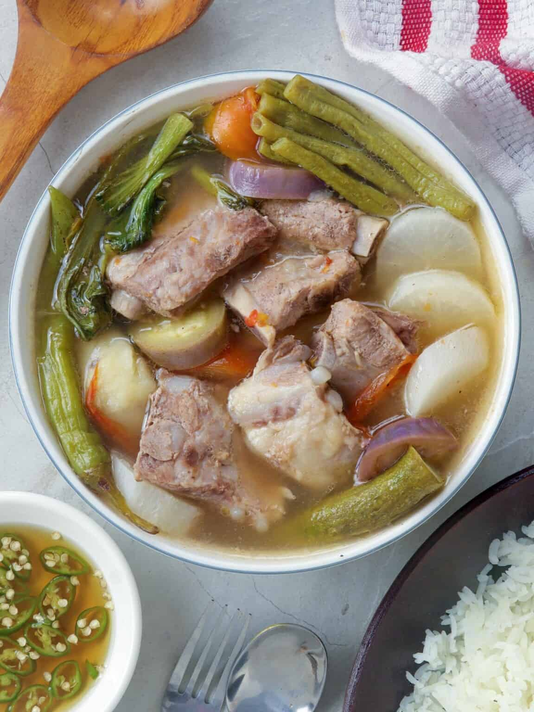

Pork Sinigang

Pork Sinigang is a delightful Filipino sour soup dish made
with pork ribs, vegetables, and tamarind-flavored broth.
What you need
- 500g of pork
- 1L of water
- 2 tomatoes
- 1 onion
- 15mL of fish sauce
- 3 pcs of gabi
- 1 Small radish
- 2 Finger chilis
- 1/2 Bunch of string beans (sitaw)
- 1 Eggplant
- 1 pack sinigang mix
How to make
-
Sauté sliced onion and tomatoes in a large pot
with a little bit of cooking oil.
-
Add pork and stir from time to time.
-
Pour water and let it come to a boil. Let simmer
for 10 minutes.
-
Add gabi, chili, and radish then let it cook for 5
minutes.
-
Add the string beans and continue to cook for 2 more
minutes.
-
Pour your sinigang mix, and be generous. The more sinigang
mix, the sourer it becomes.
-
Season to taste with fish sauce and pepper. Keep adjusting
the recipe to your liking, and it's ready to serve!
Home